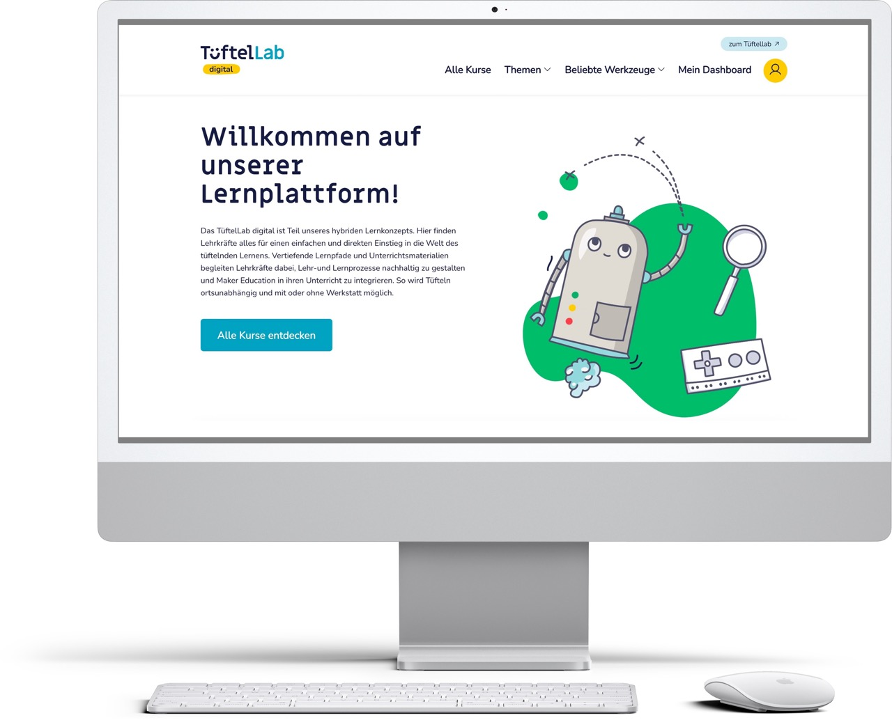
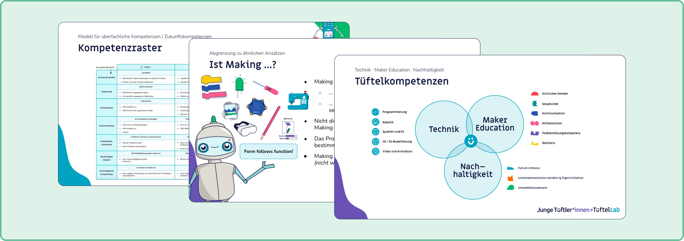
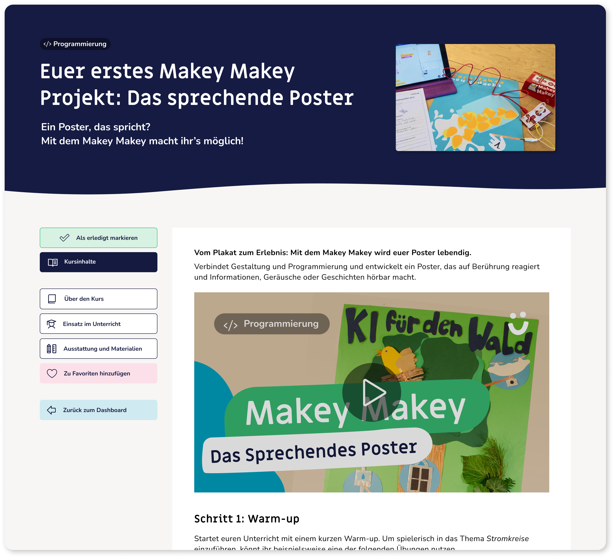
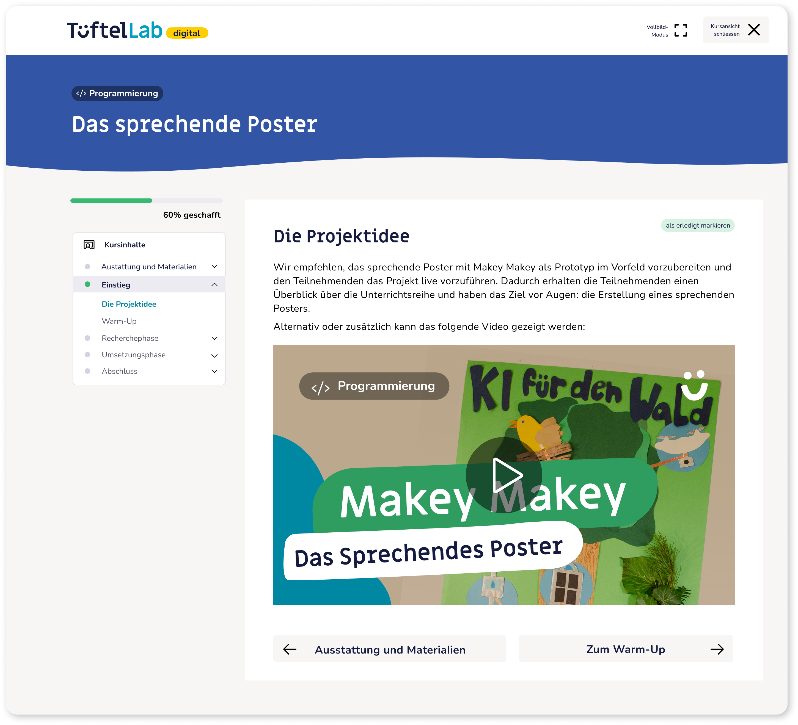

TüftelLab Digital
Herausforderung
Maker Education lebt vom gemeinsamen Tüfteln. Aber nicht jede Schule hat eine Werkstatt, und nicht jede Lehrkraft kann einfach mit dem Tüfteln loslegen. Das TüftelLab – Deutschlands größtes Making-Angebot – wollte diesen Einstieg auch ortsunabhängig möglich machen: Auf der Lernplattform TüftelLab digital sollten Lehrkräfte aller Fachrichtungen niedrigschwellig an digitales und analoges Making herangeführt werden – mit oder ohne eigene Werkstatt.
Die Bedingungen für dieses Projekt waren anspruchsvoll für solch ein Vorhaben: kein großes Digitalteam, kein üppiges Budget, keine interne Tech-Abteilung. Drei Jahre lang habe ich die Weiterentwicklung von TüftelLab digital als Learning Designerin mit Lead für Lerninhalte und Onlinekurse begleitet, gemeinsam mit einer Kollegin (UX-Designerin) und einem externen Developer.

Ansatz
Von der Migration zum didaktischen Fundament
Den Anfang machte der Umzug der alten Lernplattform „Tüftelakademie" in die neue, Moodle-LMS-basierte Plattform. Statt Kurse einfach zu übertragen, haben wir sie gegen ein neu entwickeltes pädagogisches Konzept und Kompetenzmodell geprüft, das ich mit erarbeitet habe – es definierte, welche Kompetenzen die Lernangebote überhaupt vermitteln sollen und woran sich Qualität in einem Selbstlernkontext bemisst. Auf dieser Basis entschieden wir für jeden Kurs: bleibt er, wird er überarbeitet, oder wandert er ins Archiv. Parallel entstand ein Plattformkonzept mit neuen Kurstemplates für acht Themenfelder, von Programmierung und Robotik über KI und Daten bis hin zu Quanten – ein Rahmen, den wir seither immer wieder angepasst haben, wenn neue Themenkategorien oder Anforderungen dazukamen.
Dieser prozess war hoch iterativ.

Physisch und digital zusammendenken
Besonders wichtig war die Verzahnung der Plattform mit dem hybriden Lernkonzept von TüftelLab: Vor-Ort-Angebote und physische Materialboxen zu digitalen Technologien bilden das Herzstück des Angebots. Die Plattform ergänzt beides um ein digitales Teilprodukt: Lernpfade, die Lehrkräfte beim Kennenlernen von ditialen Tools und Making Methonen, zur Vor- und Nachbereitung und Inspiration unterstützen.
Testen statt annehmen
Wie gut die Inhalte und Lernformate bei der eigentlichen Zielgruppe ankommen, haben wir in einem ausführlichen Usertestingprozess mit Lehrkräften geprüft. Ein zentrales Ergebnis: Lehrkräfte, die eine Materialbox nutzten, aber nicht an einer unserer Fortbildungen teilgenommen hatten, brauchten deutlich mehr Anleitung, als die Lernpfade bis dahin boten.
Diese Erkenntnis floss in die Überarbeitung bestehender Inhalte und Erstellung neuer Lernpfade ein: mit stärkerer Führung, Einstiegsprojekte und mehr erklärendem Kontext für Lehrkräfte, die ohne Fortbildung einsteigen.
Kontinuierliche Iteration
Schritt für Schritt haben wir die Plattform über die Jahre hinweg weiterentwickelt.
So haben wir beispielsweise die Aufbereitung unserer Kurse grundlegend überarbeitet: Ausführliche Unterrichtskonzepte wurden auf die wesentlichen Inhalte reduziert und stärker auf die Bedürfnisse von Lehrkräften mit wenig Zeit im Arbeitsalltag ausgerichtet. Gleichzeitig haben wir zusätzliche Informationen ergänzt, die Lehrkräfte dabei unterstützen, Making-Methoden in den eigenen Unterricht zu integrieren.
Auch die Struktur der Kurse haben wir auf Basis dieser Erfahrungen weiterentwickelt. Es zeigte sich, dass wichtige Rahmeninformationen innerhalb eines Kurses nur schwer zugänglich waren. Daraufhin haben wir zusätzliche Felder ergänzt, über die Nutzer*innen zentrale Metadaten wie benötigte Materialien schnell erfassen können.


Links: Erste Version der Kurse · Rechts: Überarbeitete Version
Meine Rolle
- Lead für Lerninhalte und Lernkonzepte über drei Jahre
- Mitentwicklung des pädagogischen Konzepts und Kompetenzmodells der Plattform
- Überführung, Qualitätsprüfung und Überarbeitung bestehender Kurse anhand dieses Modells
- Entwicklung neuer Kurskonzepte und Templates für die Plattform (Moodle LMS)
- Konzeption hybrider Lernpfade als digitale Ergänzung physischer Materialbox-Produkte sowie Beratungs- und Fortbildungsangebote für Schulen
- Planung und Durchführung von Usertesting mit Lehrkräften, Ableitung konkreter Verbesserungen für Plattform und Lernpfade
- Gestalterische Ausrichtung und Bearbeitung der Plattform nach Styleguide und CI
- Strategische Ausrichtung der Plattform in Abstimmung mit Unternehmens- und Produktstrategie
- Zusammenarbeit mit UX-Design und externer Entwicklung zur kontinuierlichen Verbesserung der Plattform
- Onboarding des Teams für Kurspflege und -bearbeitung, Ansprechperson für Lerncontent- und Plattformthemen
Wirkung
Aus einer losen Sammlung migrierter Lerninhalte ist eine eigenständige Plattform mit einem klaren didaktischen Fundament entstanden, die heute zu den tragfähigen Säulen des TüftelLabs gehört. TüftelLab Digital bietet Lehrkräften einen digitalen Zugang zu Inhalten und Methoden rund um Maker Education und unterstützt sie dabei, Making an die eigene Schule zu bringen.
TüftelLab digital in Zahlen:
→ 1200 registrierte Nutzer*innen
→ Mehr als 100 Lerninhalte (Onlinekurse & Lernmaterialien)
→ 5 Lernpfade zum Themenfeld „Making in der Schule"
(Stand September 2026 – seit Implementierung der Lernplattforn im September 2023)